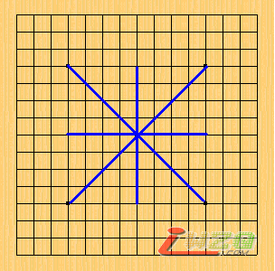
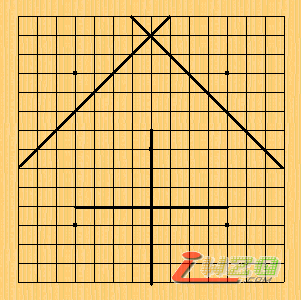
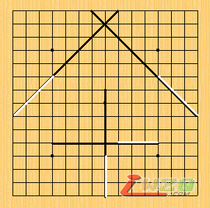
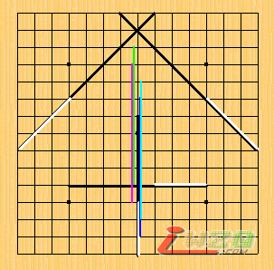

奇异视角下的五子棋（1）
#1 奇异视角下的五子棋（1） 作者：厦门小天 发表时间：2009-2-23 17:41:34
似乎五子棋流行一种思想，认为黑棋优势是因为黑多了一个子，且优势会随着子数增多而不断削弱。但我们知道26种开局都符合该思想的要求，但26开局的优势变化却很难说符合该思想的结论。当然，几乎人人都可以找到理由为该思想进行辩护，诸如a黑必胜故无优势削弱，黑1、3子距离太远形成弃子，棋子间搭配关系，人为行棋失误等，而且这些理由基本都是正确的。 几年前我也曾思考过这个问题，但不大接受这些理由，因为我认为这些理由不利于科学全面地认识问题，这里就不做太多的专业说明。然而，黑棋确确实实多了个棋子，若少了这个子黑棋也确实优势不起来，思考陷入困境。 直到有一天，sosei大师讲课时说道：五子棋就是玩连接的。我突然豁然开朗，虽然我们嘴上称下棋下棋，但实际在棋盘上起最直接作用的是棋子带来的绑定着的4条线（连接），而不是棋子本身。 由于受到sosei思想启发，我尝试换种方式来表述五子棋（为了避免禁手表述困难，这里指无禁五子棋）：在15*15棋盘，双方轮流“走”以某点为中心的4条长度9格的线（2条直线2条斜线），中心点不允许重叠。一方在棋盘上任意连续5格的线重叠5次为胜。 虽然换了种表述方式，但本质还是五子棋，这种表述方式意义在于使基础变量变得清晰：15棋盘（盘端位置），轮流，中心点不重叠，绑定着的，4条长度9格的线（4条线）。 PS：我们知道任何一种棋类，或者说任何一个事物最基本最底部的规则一旦被修改，对整体影响是巨大的。科学实验原理就是在其他变量不变的情况下改变某个变量来观察结果的变化。 先谈“绑定”。按常态（正常的五子棋规则）中心点绑定着4条线，4条线只能位于中心向棋盘8个方向延伸。 假如取消“绑定”规定的话，相当于每回合让你在棋盘上放4条不同方向的线，线的位置由你控制（同方向的线中心不可重叠，异方向线同色可重叠异色不可重叠）。几轮测试轻松发现在该假设下，只要不失误任何一方都不可能取胜，连连续3格线重叠3次都不可能，哪怕无限棋盘亦如此。因为防守效率可以轻松达到100%。再假设取消“绑定”且允许线方向任意的话，相当于由你任意控制4条线的位置及方向。几轮测试则发现在该假设下，先行绝对必胜。方法：第1回任意摆3个方向以上，无论对方如何防御，之后将4条线集中在同一线上必能达到连续5格5次重叠（即5连）。


PS：绑定情况下4条线方向位置固定如图1；解除绑定位置任意但方向固定如图2；在此假定下，白可以轻松跟着黑，形成绝对防御；黑甚至要连续3格线3次重叠都不行（无法3连）；在假设2下，第1回随意摆4条线，之后无论如何防御，之后将4条线集中一线即可连续5格线5次重叠I，其他4线分别由青，浅蓝，深蓝，紫色表示。 虽然假设荒谬，但实验结果却大大出乎我的意料，从未被关注过“绑定”规定居然对整个五子棋起到如此巨大的影响。之后不得不反思，为什么不改变其他规则单单取消“绑定”会造成如此巨大影响？不难发现，在取消“绑定”下的每一条线都将被完全利用，即每回合的利用率都达到100%；但在正常规则下行棋，通盘下来达到100%利用的棋子仅占少数，大多是75%，50%，25%的点，即便走出进攻或防守的妙手，利用率也难超过75%,而在一方VCT防守方的几个子利用率低至接近25%。 由此，我们不得不对线的利用率引起重视。由于正常规则线利用率受“绑定”影响，因此很容易分支出 线的分布、搭配、级别等参数思想。并在一定棋谱统计下可以发现这些参数随着棋局发展呈现出规律性变化，总体上是进攻方线利用率提高，线分布集中化，搭配加强，级别上升，防守方则相反……（建议自己摸索）至此，假如有人问“如何扩大优势”，某种程度可以等价于“如何提高线的利用率等参数”这样的形象表述。最后回到本文开头的问题：黑棋确实多了一个子，但并不是影响对局优势的直接因素；对局优势更多与线参数互成映射，而线参数能出现规律性变化的主要原因在于先手的利用，最后黑多一子往往是黑拥有先手的直接原因。然而这些并非最重要的~~
［ 有志青年 于 2009-2-23 20:13:21 时奖励此帖[金币加 20 威望加1］
#2 Re:奇异视角下的五子棋（1） 作者：大侠 发表时间：2009-2-23 18:05:18
的确是奇异。。。#3 Re:奇异视角下的五子棋（1） 作者：岳麓小棋后 发表时间：2009-2-23 18:06:20
在听了星仔的框架棋线性理论后，今天又遇到小天讲线的理论，哈哈真好，这个线性理论我也觉得是一个奇异视角，这在听星仔讲的时候我就有这种感受，从这个角度看五子棋能看出一番别样的风景来，果然不错。
另外五子棋里一直争吵的一些东西，有时候很多说法都是正确的，只是他们的前提不一样。
#4 Re:奇异视角下的五子棋（1） 作者：岳麓小棋后 发表时间：2009-2-23 18:28:36
“黑棋优势是因为黑多了一个子，且优势会随着子数增多而不断削弱”。
这个论断得说前提，事实上我的看法是，如果是最初没有禁手的五子棋，且黑方每一手都是最善手的情况下，优势会随着子数增加而不断增强；如果是现行黑单禁五子棋，优势会随着子数增多而不断削弱。
这里的削弱实际上主要是由禁手规则造成的，白方中盘胜的方式更多，“子数增多”在这里实际上只是个障眼，这里的削弱也只是相对削弱，绝对变化量还是在增加的。
#5 Re:奇异视角下的五子棋（1） 作者：岳麓小棋后 发表时间：2009-2-23 18:43:31
如果是现行黑单禁五子棋，优势会随着子数增多而不断削弱。
错了，错了，我再想想这个优势变化应该是一条比较平缓的抛物线，优势变化主要受蓝彻斯特定律、禁手和棋盘大小3个因素影响，优势变化是三者综合博弈出来的，前期蓝定律起主导作用，中盘禁手开始折磨黑棋，残局受旁端影响，大概优势变化是先增强还不足够到必胜，再削弱，再受旁端影响还不至于必败，应该是这样的 
#6 Re:奇异视角下的五子棋（1） 作者：超级玛丽 发表时间：2009-2-23 19:44:25
非常感谢分享#7 Re:奇异视角下的五子棋（1） 作者：南京小飞机 发表时间：2009-2-23 21:55:54
小天出品，必出精品！！ YYLS
YYLS
#8 Re:奇异视角下的五子棋（1） 作者：快乐天羽 发表时间：2009-2-24 13:51:47
五子棋行棋，一直讲连接性。单纯的连接是没有价值的，只有在线路畅通的情况下的连接才是有价值的，分析局面时，应该更多的考虑活线在哪里，如何把子力运送到这里去形成杀。反之防守亦然。所谓空间防与其说断其连接，还不如说断其活线来的更确切。
当然连接是很重要的，线性分析略显隐性。
顶
#9 Re:奇异视角下的五子棋（1） 作者：就是爱玩 发表时间：2009-3-5 17:33:07
增长了见识
#10 Re:奇异视角下的五子棋（1） 作者：刀魂 发表时间：2009-3-9 20:49:26
呵呵，你太有“柴”啦！！！这都想得到#11 Re:奇异视角下的五子棋（1） 作者：wrwak 发表时间：2009-3-9 21:10:08
再棋盘无限情况下 无禁手随着子变多 先手优势变大
#12 Re:奇异视角下的五子棋（1） 作者：天逸乄西西 发表时间：2009-4-4 0:04:25
请作者加群:27122239
(加群时请说明是参赛者,谢谢)
爱五子棋网-原创文学活动宣
2009年4月4日
#13 Re:奇异视角下的五子棋（1） 作者：陨落之城 发表时间：2011-7-17 11:38:04
咦？西西，好久不见。每次有什么活动好像都有你的身影。